| |
|
YATAY GÜZERGAH TASARIMI
|
Bu bölüm aşağıdaki kısımlara ayrılmıştır: Güzergah elemanları gezgini
Güzergah elemanlarının tipleri Her güzergah elemanının verilerinin tanımı Yarıçapların bildirilmesi
Geçiş eğrilerinin bildirilmesi PI'dan güzergah elemanlarının oluşturulması ve eklenmesi Yönetmelik Genel Bilgiler YATAY GÜZERGAH tasarım menüsü, yataydaki eksenleri tanımlamayı sağlar. Her eksen, güzergah elemanlarından (doğrular ve dairesel kurplar) ve yatay birleşim eğrilerinden (klotoidler) oluşacaktır.
Bu menü, DOĞRUSAL YAPI modülüne girildiğinde belirir. Girildiğinde, program girmeden önceki harita görünümünü aynı şekilde gösterir, ancak çalışma ortamı artık bu amaca uygun yatay güzergah tasarım menülerini de gösterir: 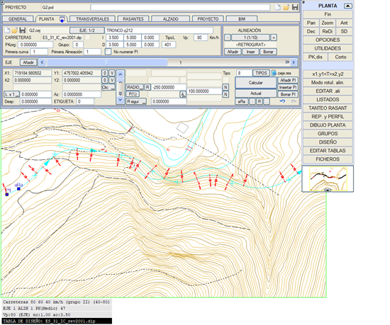
Güzergah elemanlarının tanımlandığı iletişim kutusu, karayolu ve demiryolu projeleri için benzerdir, boru hattı projeleri için özel bir tane olmasına rağmen, bunun da kullanılmasına engel bir durum yoktur. Eksenlerin görüntüleme seçenekleri ve yönetmelik kontrolünde kullanılan renkler gibi diğer seçenekler, sabit yan menüden erişilebilen [SEÇENEKLER] iletişim kutusu aracılığıyla yapılandırılır. İletişim kutusunu görüntülemenin iki modu Varsayılan olarak, iki sekmeye sahip 'kısa' bir menü gösterilir: EKSENLER ve GÜZERGAH ELEMANLARI. Her biri, iki bilgi alanını görüntülemeyi ve tanımlamayı sağlar. 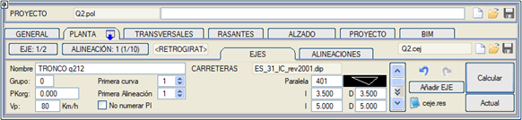
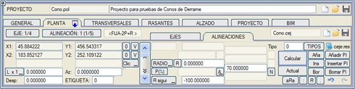
Sabit menüden, her iki sekmenin verilerinin birlikte gösterildiği uzun menü şekline geçilebilir. Bu pencere görüntüleme değişikliği, yatay güzergah görüntüleme seçeneklerinden yapılır: 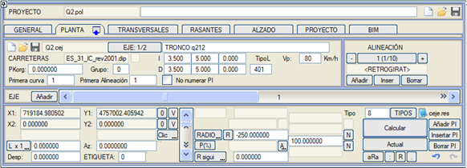
Kullanıcı, hangi yatay güzergah görüntüleme moduyla çalışmayı tercih ettiğine karar vermelidir ve tasarımın herhangi bir aşamasında bir moddan diğerine geçiş yapılabilir. Bu menünün üst kısmında bulunan  , ,  , ,  kutucukları aracılığıyla sırasıyla bir .pol veya bir .isa dosyasını indirebilir, yükleyebilir veya kaydedebiliriz. .pol dosyası, doğrusal yapı projesinin indeksidir. Bu dosya, doğrusal yapı projesinin geri kalan dosyalarını ilişkilendirir. kutucukları aracılığıyla sırasıyla bir .pol veya bir .isa dosyasını indirebilir, yükleyebilir veya kaydedebiliriz. .pol dosyası, doğrusal yapı projesinin indeksidir. Bu dosya, doğrusal yapı projesinin geri kalan dosyalarını ilişkilendirir.Yatay güzergah dosyası adının hemen yanındaki , , kutucukları aracılığıyla, projemin farklı eksenlerini içeren bir .cej dosyasını sırasıyla indirebilir, yükleyebilir veya kaydedebiliriz.İletişim kutusunun açıklaması
Çalışılacak eksenin seçimi, EKSEN yatay kaydırıcısı kullanılarak veya [EKSEN: i/n] düğmesine basıldıktan sonra doğrudan numarasını yazarak yapılır. Bu düğmenin özel bir davranışı vardır:
[Ekle] düğmesi, tanımlanan sonuncunun ardından yeni bir eksen oluşturmayı da sağlar. 1 numaralı eksenin otomatik olarak oluşturulduğunu unutmamak gerekir, bu nedenle PLAN'a girerken bu seçenek kullanılırsa, 2 numaralı eksen oluşturulur ve 1 numaralı eksen boş kalır. Boykesit için, .cej dosyasında saklanacak bir ad ilişkilendirmek mümkündür. Bu açıklayıcı ad, eksen numarasını girme düğmesinin sağındaki boşluğa girilir. 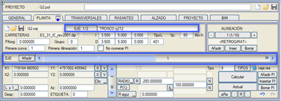
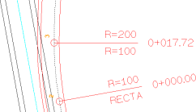S ve D alanlarından, eksenden olan mesafeler atanarak, eksenin sağına üç ve soluna üç olmak üzere 6 adede kadar çizginin otomatik olarak çizilmesi sağlanabilir. Böylece, görüntüleme seçeneklerinde genişliklerin gösterimi etkinse, her hesaplamada eksene paralel bu çizgiler çizilerek, örneğin, platform ve banketin teorik genişlikleri simüle edilir. Varsayılan olarak, bu genişlikleri çizmek için kullanılan çizgi 401'dir, ancak ÇizgiTipi alanından yapılandırılabilir. Eğer Yatay Güzergah seçenekleri arasında Kavşaklar seçeneğini etkinleştirirsek, kavşakların karakteristik noktalarının doğru görüntülenmesi için bu mesafeler yapılandırılmalıdır. 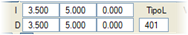
Güzergah elemanları gezgini 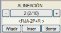Güzergah elemanları gezgini, tanımlanacak veya değiştirilecek eksen elemanını seçmenin yanı sıra veri silme ve ekleme imkanı sunar. Varsayılan olarak her zaman boş olsa bile bir veri bulunur. Bir elemanın seçimi, üzerine tıklayarak grafiksel olarak da yapılabilir. Eğer başka bir eksenin bir elemanı seçilirse, program otomatik olarak eksen değiştirir.
Yeni bir eleman eklendiğinde veya araya eklendiğinde, varsayılan olarak tip 0 atanır, ancak bu davranış yatay güzergah seçeneklerinde değiştirilebilir. Güzergah elemanlarının tipleri 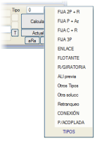Bir eksen, birbirine teğet olan kurp ve doğru güzergah elemanlarının bir dizisinden oluşur. ISTRAM®/ISPOL®, geniş bir yatay güzergah elemanı tipolojisine sahiptir. Açılır menüdeki [TİPLER] tuşuna basıldığında, kullanıcıya mevcut olasılıkların çoğu sunulur. Tamamlayıcı olarak, dikey menüdeki [Tipler] düğmesine basıldığında, bir yeniden çizimle kaybolan tiplerin ve ilişkili verilerin bir özet tablosu ekranda gösterilir: 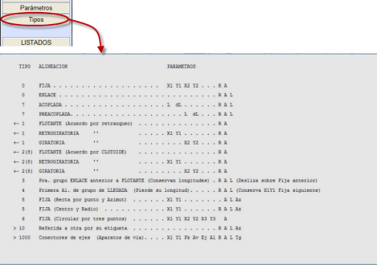
Her güzergah elemanının verilerinin tanımı
Güzergah elemanı tiplerinin bildirilmesi, eksenin doğru bir şekilde hesaplanması için belirleyicidir. [TİPLER] düğmesi tarafından sunulan tablodan bir tane seçilerek doldurulabilen Tip alanından, programın geri kalan verilerle birlikte girilen elemanın tipini anlaması sağlanır. Yeni bir eleman eklendiğinde veya araya eklendiğinde varsayılan olarak tip 0 atanır, ancak bu davranış yatay güzergah seçeneklerinde değiştirilebilir. Pencerenin alt şeridi, mevcut elemanın verilerini, önceki ve sonraki elemanların yarıçaplarını ve üçü arasındaki ara klotoidleri içerir ve ayrıca bunların değiştirilmesine izin verir. 
Güzergah elemanları eklendikçe, çizilebilecek sabit elemanlar, yani kullanıcı tarafından girilen verileri olanlar ekranda gösterilecektir.
Mevcut eleman, eğer sabitse, harita üzerinde sarı renkte çizilir ve siyan renginde çizilecek olan diğerlerinden ayırt edilir. Tipik [Tıkla/Klavye] düğmesi, veri giriş modunu grafiksel ve sayısal arasında değiştirir. Grafik modunda, kullanıcı kırmızı kot tasarımına özgü yakalama modlarından yararlanabilir. Güzergah elemanı tipine bağlı olarak, onu tanımlamak için hiç, bir, iki veya üç noktaya kadar gerekebilir; bu noktalar geçiş noktaları, merkezler veya basit referans noktaları olabilir. Bu noktaların tanımı grafiksel (ekranda tıklayarak), bu durumda tüm yakalama modları veya klavye ile mutlak, göreceli veya polar koordinatlarda giriş geçerlidir veya klavye aracılığıyla sayısal olarak da girilebilir. Koordinat çiftlerinin yanında, nokta çiftlerinin koordinatları üzerinde işlem yapmayı sağlayan iki tür tuş bulunur:
[P(%)] düğmesi, yatay güzergah tasarım aşamasından itibaren, özel bir iletişim kutusundan zorunlu deverleri ve proje hızlarını bildirmeyi sağlar. YARIÇAPLARIN BİLDİRİLMESİ YARIÇAP alanından, programın kuralına göre güzergah elemanının yarıçap değeri girilir veya değiştirilir. Mevcut elemandan, sırasıyla R önce ve R sonra alanları aracılığıyla önceki ve sonraki elemanların yarıçapına erişim sağlanır. 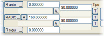 Eğer doğrudan [YARIÇAP], [R önce] veya [R sonra] düğmelerine basılırsa, bunlar sırasıyla [DERECE], [D önce] ve [D sonra]'ya dönüşür ve o zaman kurplar yarıçaplarına göre değil, bazı Latin Amerika ülkelerinde yaygın olduğu gibi kurp derecesine göre tanımlanır. GEÇİŞ EĞRİLERİNİN BİLDİRİLMESİ Birleşim eğrileri, ana güzergah elemanları arasındaki geçişleri yapmayı sağlar.Serbestlik derecelerine bağlı olarak, bu birleşim eğrileri tek çözümlü olabilir, bu durumda program onları hesaplar (bir parametreler arası ilişki belirtme imkanıyla) veya kullanıcı tarafından tanımlanabilir, bu durumda kullanıcının uygun parametreyi bildirmesi gerekir.
Bu parametre, klotoidin A sabitine göre yapılmak isteniyorsa [A] alanında bildirilir, ancak bu düğme [L]'ye dönüştürülebilir ve o zaman klotoid uzunluğuna göre tanımlanabilir. Özel durumlar hariç, geçiş eğrisinin işaretini belirtmek gerekmez. A=0 değeri, mevcut elemanın ve ondan öncekinin ara birleşim eğrisi olmadan doğrudan teğet olduğunu belirtir. Bu durumda ve ardışık iki eleman iki doğru ise, bir köşe noktası oluşur ve program olası hata hakkında uyarır.  Hesaplama sonucunda bir some klotoidi ortaya çıktığında, sonuçlarda bu noktada, o somenin eğrilik yarıçapını ve iki klotoid kolu arasındaki teğetlik noktasının konumunu belirten sıfır uzunluklu sanal bir dairesel eleman görünür. Somedeki yarıçap değerini sabitlemek de mümkündür. Hesaplama sonucunda bir some klotoidi ortaya çıktığında, sonuçlarda bu noktada, o somenin eğrilik yarıçapını ve iki klotoid kolu arasındaki teğetlik noktasının konumunu belirten sıfır uzunluklu sanal bir dairesel eleman görünür. Somedeki yarıçap değerini sabitlemek de mümkündür.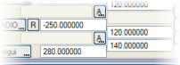 Bir S kurbunda iki farklı parametre kullanıldığında, birincisi birinci dairesel kurptan çıkışa ve ikincisi ikinciye girişe uygulanır; örneğin, R=-250, A=120, A=140, R=280. S'nin iki klotoidinden birini kaldırmak isteniyorsa, geçişsiz dairesel kurba bitişik olanın parametresini 0 olarak bildirmek yeterlidir. PI'DAN GÜZERGAH ELEMANLARININ OLUŞTURULMASI VE EKLENMESİ Mevcut eksene (eğer son eleman iki noktalı sabit bir doğru ise) yeni doğru elemanlar eklemeyi sağlar. Yeni elemanın P1'i önceki doğrunun P2'sinde bir köşe oluşturur ve yeni elemanın P2'si grafiksel olarak seçilir. İkisi arasına, Yatay Güzergah Seçenekleri'nde önceden tanımlanmış R yarıçaplı ve A parametreli serbest bir daire eklenir. Doğrular arasındaki sapma, klotoidlerin gerektirdiği sapmaların toplamından az ise klotoidler eklenmez. Yarıçapın işareti, doğrular arasındaki sapmanın işaretine göre hesaplanır. Seçenek döngüseldir ve P2 sabitlendikten sonra yeni elemanlar eklemeye devam etmeyi sağlar. Koordinatsız tek bir elemanla yeni bir eksen eklersek, PI Ekle seçeneği önce bu ilk elemanın P1 ve P2 noktalarının konumunu grafiksel olarak tıklamamızı ister. 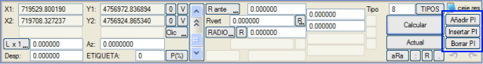
PI Ekle komutuyla, iki noktalı sabit bir doğru elemanı seçip, aralarında serbest bir kurp olacak şekilde iki doğruya bölebiliriz; kurbun somesi (PI) grafiksel olarak belirlenecektir. Kurbun yarıçapı ve klotoidlerin parametreleri Yatay Güzergah Seçenekleri'nde önceden tanımlanır. Yarıçapın işareti, somenin konumuna göre otomatik olarak hesaplanır. A klotoidleri, sadece doğrular arasındaki sapma her ikisinin de kesişmeden sığmasına izin veriyorsa konur. Seçenek döngüseldir, bir some sabitlendikten sonra aynı veya başka bir doğru seçilebilir ve PI'lar eklemeye devam edilebilir. Bu seçenekle, önce başlangıç ve bitiş noktası arasında bir doğru oluşturarak (eksen hesaplanır) ve ardından tüm somelerini ekleyerek bir eksen çizebiliriz. PI Sil komutuyla, başlangıç ve bitiş noktaları dahil olmak üzere bu noktaları aynı döngüsel şekilde silebiliriz. Bir nokta silindiğinde, kalan doğrunun önceki ve sonraki kurplarında klotoidlerin sığıp sığmadığı veya kaldırılması gerekip gerekmediği ve dairesel elemanın yarıçapının işaretinin değiştirilmesi gerekip gerekmediği analiz edilir. YÖNETMELİK Eğer bir yatay güzergah tasarım tablosu yüklenmişse, [R] düğmesi aracılığıyla yönetmeliğe göre o tablonun önerilerini izleyerek yarıçapı seçmek mümkündür. Benzer şekilde, [T] tuşu klotoid parametreleri sunar. Bu durumda en fazla üç [T] tuşu görünebilir. En üstteki birincisi, mevcut ana elemandan önceki bir veya iki klotoidi değiştirir, ortadaki mevcut dairesel kurba bitişik olan ikisini değiştirir (eğer bir doğru ise düğme pasif olur) ve üçüncüsü sonrakileri değiştirir. Dinamik veya gerçek zamanlı değişiklik Program, fareyi kullanarak ve eksenin 'veri' noktalarını (tutamakları) hareket ettirerek yatay güzergah eksenlerinin interaktif olarak değiştirilmesi imkanını sunar, böylece tasarımın nasıl değiştiği ekranda gözlemlenebilir: 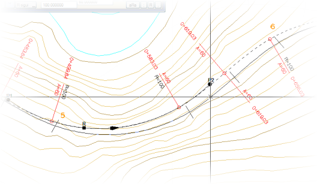
Eğer alınan tutamak yarıçapa karşılık geliyorsa ve o güzergah elemanıyla ilişkili klotoidler varsa, klotoid parametreleri ilişkili yönetmelik tablosuna göre otomatik olarak yeniden ayarlanır. 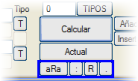Bu gerçek zamanlı değişiklikler ve daha fazlası, ilgili düğmeler aracılığıyla da yapılabilir. Kullanımı şöyledir: Bir tıklama, değiştirilecek veriyi grafiksel olarak 'almayı' sağlar ve imleçle kaydırıldıktan sonra, yeni bir tıklama ekranda gerçek zamanlı olarak gösterilen değişikliklerin kabul edildiği anlamına gelir.
Dinamik değişiklik, herhangi bir dinamik değişikliği gerçekleştirmek için sıcak noktaları seçmeyi sağlar. Bir sıcak nokta, bir sabit elemanın P2 noktasının bir sonraki sabitin P1 noktasıyla çakıştığı zaman oluşan V somesi olabilir. Bu some yeni bir konuma sürüklenebilir. Başka bir sıcak nokta, iki sabit doğru arasında ve klotoidsiz serbest elemanlarda tanımlanan veya iki noktalı ve bir yarıçaplı sabit elemanlarda tanımlanan PR (geçiş noktasından yarıçap) olabilir. 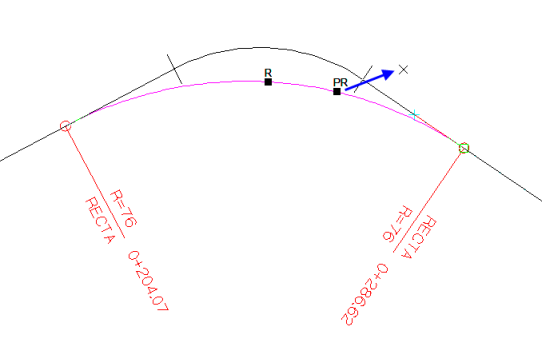
Hem tutamakları doğrudan manipüle ederek hem de bu düğmeleri kullanarak, <Esc> tuşu değişiklik işlemini anında iptal eder. Hesaplama, geometrik çözüm ve listeler 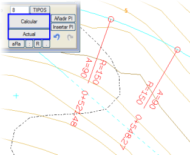Tanımlanan güzergah elemanlarından yola çıkarak, [Hesapla] düğmesi eksenlerin hesaplanmasını gerçekleştirir, bir dizi ara dosya, sonuç listeleri oluşturur ve hesaplanan eksenleri ekranda çizer. Eğer [Mevcut] düğmesine basılırsa, o zaman sadece bulunulan eksen hesaplanır. Bir hesaplama yapıldığında, eksenlerin tanımının on adede kadar durumu bir yığında saklanır. Hesapla komutuyla birlikte program, yaptığımız işlemleri geri alma veya yineleme  imkanı sunar. imkanı sunar.Geri al ile yığından bir durum kurtarıldığında, bu durumun yığının dışında kalmaması isteniyorsa, yeniden yap'a basılmayacaksa Hesapla komutuna tıklanmalıdır.
Geometrik hataların kontrolü 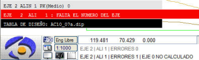Eğer hesaplamayı çalıştırdıktan sonra tanımlanan tüm eksenler görünmüyorsa veya bir kısmının bir bölümü eksikse, bu, tanımsızlık veya veri uyumsuzluğu hatalarından kaynaklanmaktadır. Birikmiş sayı ve yapılan hatalar, yatay güzergah her hesaplandığında mesaj alanında görünür. 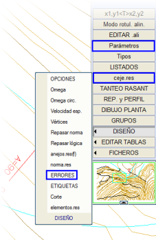Geometrik hatalar, eksenin "yumuşak" sürekliliğine, yani eksen kesintileri, köşe noktaları, geri dönüşler veya negatif uzunluklar, aşırı veri nedeniyle tutarsızlıklar vb. olmamasına atıfta bulunur. Dolayısıyla, yönetmelik uygulamasına yönelik hatalarla karıştırılmamalıdır.
Hata mesajları ardışık olduğu ve yüksek hızda göründüğü için, sabit yan menüde bulunan [Parametreler] seçeneğinde, hata mesajları arasında bekleme süresi ayarlanabilir, böylece onları görmek için zaman olur, ancak en rahatı, yan menüdeki [TASARIM] → HATALAR seçeneğine gitmektir, bu seçenek yatay güzergah hesaplamasında bulunan tüm hataları içeren ayrıntılı bir tablo açar. Listelerin oluşturulması Hesaplama sırasında, hem hesaplama sonuçlarını hem de verileri içeren çeşitli eksen listeleri dosyaları otomatik olarak oluşturulur:
Eksenlerin çizimi Yatay güzergah her hesaplandığında, program eksen hesaplamasını EDM üzerinde 53 tipi bir 2D çizgiyle temsil eder. Eğer Yapılandırma → Tercihler → Görüntüleme → Sonradan çizim menüsündeki kutucuk devre dışı bırakılmışsa, o zaman sabit güzergah elemanları sunulmaz ve sadece eksenlerin çizimi gösterilir. Hesaplama bittiğinde (mesajlardan anlaşılır), eğer o anda ilgi çekmiyorsa, eksenlerin ve ana noktaların ve etiketlerin çizim süreci <Esc> tuşuna basılarak kesilebilir. 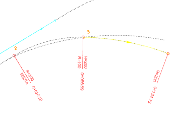Hesaplama yaparken, program otomatik eksen çizimini (53 tipi EDM çizgileri) ve özel noktalarını ekrandan silmez, böylece ardışık çözümler görsel olarak karşılaştırılabilir: Yeniden çizim yapıldığında ekran yenilenir ve sadece son hesaplananların çizimi kalır.
Yatay güzergah her hesaplandığında, mevcut eksen de etiketlenmiş olarak görünür. Bu eksen etiketlemesi, görüntüleme seçenekleri menüsündeki Mevcut ekseni etiketle yerine Tümü seçeneği etkinleştirilirse tüm eksenlere genişletilebilir. Ayrıca, etiketlenecek elemanlar, o anda aktif olan ve dikey menüdeki [Eleman etiketl. modu] seçeneğinden değiştirilebilen etiketleme moduna bağlı olacaktır. Varsayılan etiketleme modu yalnızca özel noktaları işaretler, KM'leri ve kurp tiplerini (doğru, dairesel veya klotoid) belirtir, ancak kütüphanede çok daha ayrıntılı etiketleme modları bulunur ve bunlar eksende kilometre noktaları oluşturmayı, ötelenmiş, başka bir eksene dik, veri panoları,... oluşturmayı sağlar.
Bir çizgiye uydur Araçlar bağlam menüsünden, Çizgiyle Eleman Ekle ve Ayarla yapılabilir. Farenin sağ tuşuna basarak Eleman Ekle ve Ayarla yapabilirsiniz. Yeni elemanların başlangıç ve bitiş noktalarını art arda tıklayarak hızlı bir şekilde bir eksen oluşturmayı veya genişletmeyi sağlar. P2 noktasına tıklandığında ISTRAM onu ayarlar ve bitirdiğinde bir sonraki için noktaları ister, [Esc] tuşuyla çıkarız. |